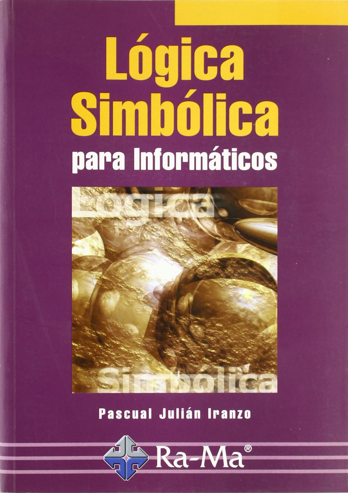

Lógica simbólica para informáticos
Pascual Julián Iranzo

- Idioma: Spanish
- Autores: Julián Iranzo, Pascual, autor
- Información de la publicación: México, D.F. : Alfaomega : Ra-Ma, 2005
- Fecha de publicación: 2005
- Descripción física: 299 páginas
Ubicación |
Numero de Clasificación |
|---|---|
| Facultad de Ingeniería - Div. Educ. Continua | QA76.9M35 I73 |
| Facultad de Estudios Superiores Cuautitlán 1 | |
| Facultad de Estudios Superiores Aragón | |
| FES Acatlán | QA76.9M351773 |
| D.G.T.I.C. Ciudad Universitaria | |
| Biblioteca Central | |
| D.G.T.I.C. Centro Mascarones | |
| Facultad de Ingeniería. Biblioteca "Enrique Rivero Borrell" | |
| Centro de Investigaciones Multidisciplinarias sobre Chiapas y la Frontera Sur (CIMSUR) | |
| "Colegio de Ciencias y Humanidades, Plantel Sur" |
Buen libro par el tema1, para poder repasar un poco de teoría, ejercicios.